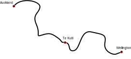
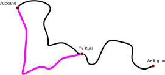
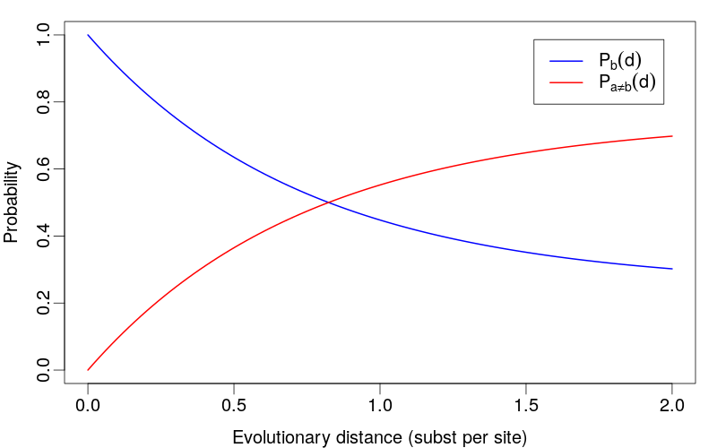
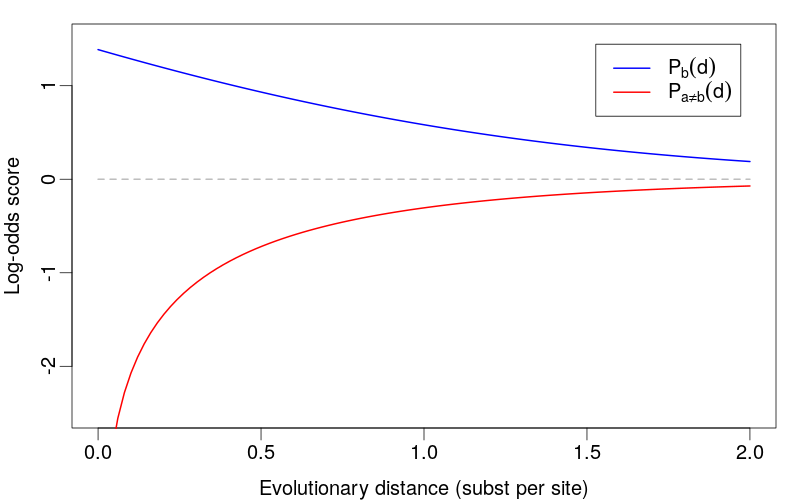

Pairwise Alignment
The goal of pairwise alignment
Aligning one sequence with another allows us to assess the homology between the two sequences.
Alignment allows us to break down the question of sequence similarity into a large number of smaller questions about character similarity.
Pairwise alignment is the basis of multiple sequence alignment which itself forms the basis for phylogenetic reconstruction from molecular data.
Dot Plots
A simple means of assessing pairwise homology visually.
Consider the following pair of sequences:
- decided to build three ships, three Arks in space
- decided to build three Arks in space

- Each row corresponds to a position on seq 1, each column to a position on seq 2.
- Pixel $(i,j)$ is coloured if the characters at site $i$ on seq 1 and $j$ on seq 2 match.
- Diagonal lines indicate runs of matching sites.
Dynamic Programming
- Method for solving combinatorial optimization problems.
- Guaranteed to give optimal solution.
- Generalization of "divide-and-conquer".
- Relies on principle of optimality:
Sub-optimal solution of a sub-problem cannot be part of the optimal solution of the full problem.
Problems suitable for solution by dynamic programming are said to have
optimal substructure.
optimal substructure.
Principle of Optimality


Keys to efficiency
- Computation is carried out from the bottom-up.
- Store all solutions to sub-problems in a table.
- All possible sub-problems solved exactly once, beginning with smallest sub-problems.
- Work up to original problem instance.
- Only optimal solutions to sub-problems are used to compute solution to problem at next level.
- Don't carry out computation in recursive, top-down manner
- same sub-problems would be solved many times.
Pairwise amino acid alignment
Sequences
x = a c g g t s
y = a w g c c t t
Alignment
x' = a - c g g - t s
y' = a w - g c c t t
Scoring Alignments
- Numeric score associated with each column.
- Total score given by sum of column scores.
- Column types:
- Identical (+ve score)
- Conservative (+ve score)
- Non-conservative (-ve score)
- Gap (-ve score)
Alignment
x' = a - c g g - t s
y' = a w - g c c t t
The score matrix (or substitution matrix) $s$ contains the column scores of every possible pair. A column with the character pair $a,b$ is given by the matrix entry $s(a,b)$.
Scoring methods
- Model-based
- Log-odds scoring
- Empirical
- Often used for amino acid alignments
- PAM matrices
- BLOSUM matrices
- JTT
- WAG
- Different matrices used depending on the
level of similarity of the sequences.
- How do you know the similarity before constructing an alignment?
Log-odds matrices
What we want to know is whether two sequences are homologous (evolutionarily related) or not, so we want an alignment score that reflects that. Theory says that if you want to compare two hypotheses, a good score is the log-odds score: the logarithm of the ratio of the likelihoods of your two hypotheses. If we assume that each aligned residue pair is statistically independent of the others (biologically dubious, but mathematically convenient), the alignment score is the sum of the individual log-odds score for each aligned residue pair.Sean R Eddy, Nature Biotechnology, 2004
Log-odds matrices
\begin{equation*}
s(a,b) = \frac{1}{\lambda}\log \frac{p_{a,b}}{f_a f_b}
\end{equation*}
The numerator ($p_{ab}$) is the likelihood of the hypothesis we want to test: that these two residues are correlated because they’re homologous. Thus, $p_{ab}$ are the target frequencies: the probability that we expect to observe residues a and b alignment in homologous sequence alignments. The denominator is the likelihood of a null hypothesis: that these two residues are uncorrelated and unrelated, occurring independently.Sean R Eddy, Nature Biotechnology, 2004
Evolutionary interpretation of match/mismatch scores
$a,b$ homologous
- $d=0.1$ is roughly 90% similarity
- $d$ is average number of changes per site
$a,b$ non-homologous
Jukes-Cantor substitution model
- All mutations equally likely
- $a\leftrightarrow b$ occur at the same rate for all character states $a$ and $b$.
- $a,b \in {A,C,G,T}$ for DNA
- $a,b \in {A,R,N,D,\ldots,W,Y,V}$ for amino acids
- All characters equally likely (equal base frequencies)
- ${0.25, 0.25, 0.25, 0.25}$ for DNA
- ${0.05, \ldots, 0.05}$ for proteins
Interpretation of match/mismatch scores (DNA)
$P_{a=b}=\frac{1}{4} + \frac{3}{4}e^{-\frac{3}{4}d}$
\begin{align*} P_{a\neq b} = & 1-P_{a=b}\\ & \frac{3}{4} - \frac{3}{4}e^{-\frac{3}{4}d} \end{align*}
\begin{align*} P_{a\neq b} = & 1-P_{a=b}\\ & \frac{3}{4} - \frac{3}{4}e^{-\frac{3}{4}d} \end{align*}
- $d=0.1$ is roughly 90% similarity
- $d$ is average number of changes per site
$\lim_{d\rightarrow\infty}P_{a=b}(d)=\frac{1}{4}$
$\lim_{d\rightarrow\infty}P_{a\neq b}(d)=\frac{3}{4}$
$\lim_{d\rightarrow\infty}P_{a\neq b}(d)=\frac{3}{4}$
Log-odds match score
\begin{align*}
s(a,a) &= \frac{1}{\lambda}\log\frac{P_{aa}(d)}{\lim_{d\rightarrow\infty}P_{aa}}\\
&=\frac{1}{\lambda}\log\frac{P_{aa}(d)}{1/4}
\end{align*}
Log-odds mismatch score
\begin{align*}
s(a,b) &= \frac{1}{\lambda}\log\frac{P_{ab}(d)}{\lim_{d\rightarrow\infty}P_{ab}}\\
&=\frac{1}{\lambda}\log\frac{P_{ab}(d)}{3/4}
\end{align*}
Variation of match/mismatch probs with $d$

Variation of match/mismatch scores with $d$

What about gaps?

Two main approaches:
- Linear score: $$\gamma(g) = -gd$$ where $d$ is the gap penalty
- Affine score: $$\gamma(g) = -d - (g-1)e$$ where $e$ is the gap extension penalty